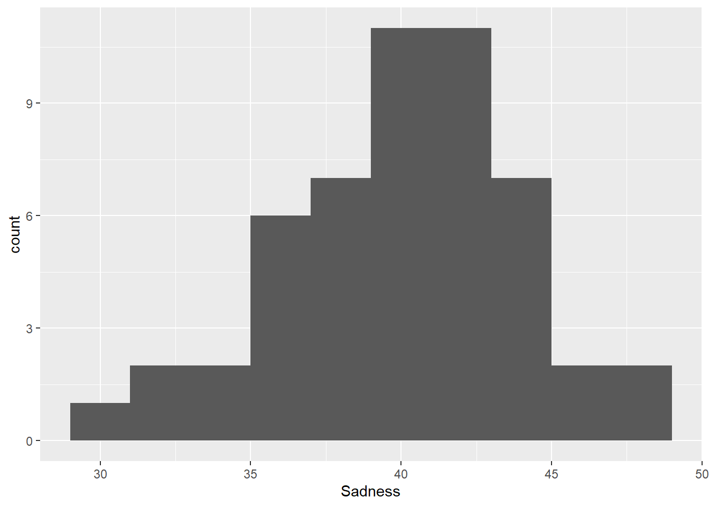
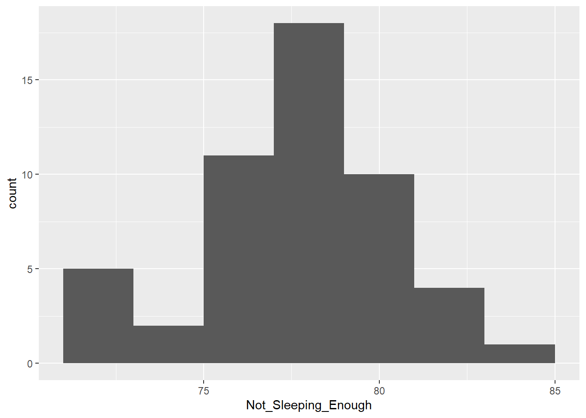
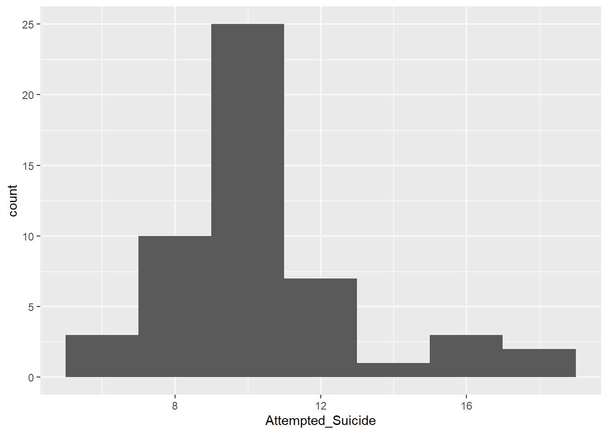
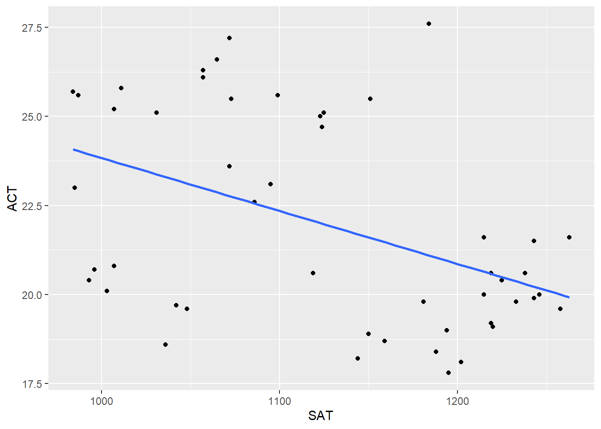

library(here)
library(readr)
library(dplyr)
library(ggplot2)
library(rsample)
library(readxl)
library(recipes)
library(dplyr)Mental Health and Standardized Test Scores
Motivation and Context
I spent a significant amount of time in high school engaged in seriously rigorous coursework, such as AP classes, which somewhat took a toll on my mental well-being. More than a few times during this period of my life, I said to myself “It would really be nice if there was someone who I could talk to about all this.” Though thankfully I’ve managed to achieve a much healthier balance in my life since entering college, I still retain an interest in the mental health of students, which is why I was motivated to center my project on these ideas.
It is commonly said that America today is in a mental health crisis - the CDC states that a staggering one in five Americans suffer from anxiety or depression, with the youth being even more severely effected [https://www.cdc.gov/mental-health/about/what-cdc-is-doing.html]. With the increase in the severity in this crisis has apparently come an increase in awareness and resources available to help meet it, however. In this project I intend to only cover mental health issues and educational results that are common and familiar to the average person (i.e., depression and anxiety for mental health, and standardized test scores for educational results). Thus, no additional context is required for a general audience to understand the concepts at play.
Main Objective
The objective of this project is to determine whether an association exists between the mental well-being of high school students and their performance on standardized tests.
Packages Used In This Analysis
| Package | Use |
|---|---|
| here | to easily load and save data |
| readr | to import the CSV file data |
| dplyr | to massage and summarize data |
| rsample | to split data into training and test sets |
| ggplot2 | to create nice-looking and informative graphs |
| readxl | to load the data |
| recipes | for linear imputation |
| dplyr | for linear imputation |
Data Description
SAT data was gathered from this site: [[https://nces.ed.gov/programs/digest/d21/tables/dt21_226.40.asp]], while ACT data was gathered from this site: [[https://www.act.org/content/dam/act/unsecured/documents/2021/2021-Average-ACT-Scores-by-State.pdf]]. The information on standardized test performances comes from the National Center for Education Statistics, a federal statistics agency whose entire job it is to collect data related to educational results. They state that their data comes from College Board, the organization that runs the SAT. The data about the ACT comes from act.org itself.
To supplement this information, pre-COVID data about the SAT Scores by state were gathered from Kaggle: [[https://www.kaggle.com/datasets/mexwell/us-school-scores]].
For the mental health: [[https://www.cdc.gov/yrbs/results/index.html]], then follow to “Youth Online High School Results” and “Unintentional Injuries and Violence”. The CDC is the Center for Disease Control, an American public health institution. As their stated mission is to protect and improve public health in the country, mental illnesses fall under their jurisdiction, which is why data on mental health was collected by the organization. From the CDC’s “Youth Risk Behavior Surveillance System” (YRBSS), I initially began using the proportion of high school students in 2021 who “felt sad or hopeless” in order to represent overall mental well-being of students. The “Youth Online”’s main page says that their data is collected from the Global School-Based Student Health Survey (GSHS), a survey organized by the World Health Organization to “provide accurate data on health behaviors and protective factors among students” [[https://www.who.int/teams/noncommunicable-diseases/surveillance/systems-tools/global-school-based-student-health-survey/methodology]].
In addition to this, I am also using other statistics gathered by the YRBSS. These include the percentage of surveyed high schoolers who actually attempted suicide, the percentage who were not getting 8 or more hours of sleep, and the percentage who reported that they were binge drinking. These factors were selected out of the many different YRBSS surveys due to all of them commonly being commonly associated with poor mental health. I expect for the percentage of students who answered “yes” to these questions to increase alongside the percentage of students who report feeling sad or hopeless.
test_scores2021 <- read_excel("C:/Users/aaronskim/Documents/Math 437/Data/standardized_test_scores.xlsx")
sad_percent2021 <- read_excel("C:/Users/aaronskim/Documents/Math 437/Data/felt_sad_2021.xlsx")
attempt_suicide2021 <- read_excel("C:/Users/aaronskim/Documents/Math 437/Data/AttemptedSuicide2021.xlsx")
binge_drinking2021 <- read_excel("C:/Users/aaronskim/Documents/Math 437/Data/BingeDrinking2021.xlsx")
sleeping_enough2021 <- read_excel("C:/Users/aaronskim/Documents/Math 437/Data/Sleeping8Hours2021.xlsx")data2021 <- test_scores2021[4:54, 1:3]
data2021[, 4] <- sad_percent2021[5:55, 2]
colnames(data2021)[4] <- "Sadness"
data2021[, 5] <- sleeping_enough2021[5:55, 2]
colnames(data2021)[5] <- "Not_Sleeping_Enough"
data2021[, 6] <- attempt_suicide2021[5:55, 2]
colnames(data2021)[6] <- "Attempted_Suicide"
data2021[, 7] <- sad_percent2021[5:55, 2]
colnames(data2021)[7] <- "Binge_Drinkers"
data2021$Sadness <- as.numeric(data2021$Sadness)
data2021$Not_Sleeping_Enough <- as.numeric(data2021$Not_Sleeping_Enough)
data2021$Attempted_Suicide <- as.numeric(data2021$Attempted_Suicide)
data2021$Binge_Drinkers <- as.numeric(data2021$Binge_Drinkers)
data2021# A tibble: 51 × 7
State SAT ACT Sadness Not_Sleeping_Enough Attempted_Suicide
<chr> <dbl> <dbl> <dbl> <dbl> <dbl>
1 Alabama 1159 18.7 36.9 77.4 NA
2 Alaska 1119 20.6 NA NA NA
3 Arizona 1181 19.8 NA 79.3 10.4
4 Arkansas 1194 19 42.9 77.8 10.4
5 California 1057 26.1 NA NA NA
6 Colorado 1072 23.6 41.7 75.6 11.9
7 Connecticut 1072 27.2 35.6 78.6 5.9
8 Delaware 984 25.7 36.9 80.1 8.7
9 District of Columb… 987 25.6 36.3 NA NA
10 Florida 993 20.4 39.3 78.4 8.9
# ℹ 41 more rows
# ℹ 1 more variable: Binge_Drinkers <dbl>Data Limitations
One of the more pertinent limitations to this data is the fact that not every high school student takes standardized tests such as the ACT and SAT. These tests are usually taken by students who intend to pursue higher education (college). They are not mandatory, and not every high schoolers takes them. Therefore, whatever conclusions drawn from this data cannot be applied to high schoolers as a whole - only this specific group of high schoolers.
Additionally, the YRBSS data possesses is incomplete - it is missing data for a few different states. This can be worked around reasonably via data imputation, however, it is still a potential issue worth noting.
Finally, the survey-based data collection of the YRBSS (as described here: [[https://www.cdc.gov/yrbs/methods/index.html]]) means that biases may appear in its data collection. For example, some of the students surveyed may have responded dishonestly. On top of this, observational studies such as these surveys cannot prove causation. Even if some connection between test scores is seen within the data, it will not prove that one is caused by the other. Perhaps lowered test scores cause depression, perhaps a worsened mood causes a lack of motivation and lower test scores, or perhaps some combination of these is true - however, this analysis cannot determinen which of these is true.
Data Wrangling (Optional Section)
As mentioned above, there are several states that have missing data for various different statistics. I will make use of linear model imputation in order to do this. Linear imputation is appropriate here, since this data appears to be a case missing completely at random - there is no pattern among the states with missing data or commonality that they all share. The data is most likely missing due to surveyors not being particularly active in these states or some other fluke, rather than because of the impact of the variable of mental health itself (excluding the possibility of the missing data from being missing at random or not missing at random).
data2021imputed <- recipe(ACT ~ Sadness + Not_Sleeping_Enough + Attempted_Suicide + Binge_Drinkers,
data = data2021) |>
step_impute_linear(c(Sadness, Not_Sleeping_Enough, Attempted_Suicide, Binge_Drinkers), impute_with = imp_vars(ACT))
data2021_full <- data2021imputed |>
prep() |>
bake(new_data = NULL)
data2021_full# A tibble: 51 × 5
Sadness Not_Sleeping_Enough Attempted_Suicide Binge_Drinkers ACT
<dbl> <dbl> <dbl> <dbl> <dbl>
1 36.9 77.4 11.2 36.9 18.7
2 40.6 77.3 10.8 40.6 20.6
3 40.8 79.3 10.4 40.8 19.8
4 42.9 77.8 10.4 42.9 19
5 38.7 78.2 9.59 38.7 26.1
6 41.7 75.6 11.9 41.7 23.6
7 35.6 78.6 5.9 35.6 27.2
8 36.9 80.1 8.7 36.9 25.7
9 36.3 78.1 9.69 36.3 25.6
10 39.3 78.4 8.9 39.3 20.4
# ℹ 41 more rowsdata2021_final <- cbind(data2021[,1:3], data2021_full[,1:4])
data2021_final State SAT ACT Sadness Not_Sleeping_Enough
1 Alabama 1159 18.7 36.90000 77.40000
2 Alaska 1119 20.6 40.55472 77.32535
3 Arizona 1181 19.8 40.82899 79.30000
4 Arkansas 1194 19.0 42.90000 77.80000
5 California 1057 26.1 38.66910 78.18081
6 Colorado 1072 23.6 41.70000 75.60000
7 Connecticut 1072 27.2 35.60000 78.60000
8 Delaware 984 25.7 36.90000 80.10000
9 District of Columbia 987 25.6 36.30000 78.10304
10 Florida 993 20.4 39.30000 78.40000
11 Georgia 1086 22.6 43.50000 75.60000
12 Hawaii 1144 18.2 34.80000 76.50000
13 Idaho 985 23.0 44.80000 77.69864
14 Illinois 1007 25.2 42.10000 80.60000
15 Indiana 1095 23.1 46.90000 82.10000
16 Iowa 1243 21.5 39.10000 72.60000
17 Kansas 1243 19.9 37.70000 74.40000
18 Kentucky 1219 19.2 39.20000 80.00000
19 Louisiana 1188 18.4 47.50000 80.30000
20 Maine 1099 25.6 37.90000 78.10304
21 Maryland 1073 25.5 39.20000 78.08749
22 Massachusetts 1184 27.6 38.50000 79.60000
23 Michigan 1031 25.1 40.30000 81.20000
24 Minnesota 1263 21.6 40.21188 77.48089
25 Mississippi 1202 18.1 41.80000 76.70000
26 Missouri 1219 20.6 32.50000 78.00000
27 Montana 1225 20.4 41.40000 71.40000
28 Nebraska 1246 20.0 36.40000 73.50000
29 Nevada 1195 17.8 45.60000 79.50000
30 New Hampshire 1065 26.6 44.20000 76.70000
31 New Jersey 1125 25.1 41.50000 77.40000
32 New Mexico 996 20.7 42.50000 71.40000
33 New York 1057 26.3 31.40000 77.30000
34 North Carolina 1150 18.9 43.40000 81.80000
35 North Dakota 1258 19.6 36.00000 75.50000
36 Ohio 1048 19.6 42.60000 81.00000
37 Oklahoma 1042 19.7 43.50000 79.20000
38 Oregon 1119 20.6 40.55472 77.32535
39 Pennsylvania 1123 25.0 43.70000 83.90000
40 Rhode Island 1011 25.8 37.80000 76.40000
41 South Carolina 1036 18.6 41.10000 76.30000
42 South Dakota 1215 21.6 38.70000 71.30000
43 Tennessee 1220 19.1 42.20000 79.50000
44 Texas 1003 20.1 44.60000 75.60000
45 Utah 1238 20.6 41.50000 76.50000
46 Vermont 1124 24.7 29.60000 77.96306
47 Virginia 1151 25.5 38.20000 76.00000
48 Washington 1072 23.6 39.52620 77.79197
49 West Virginia 1007 20.8 47.50000 82.50000
50 Wisconsin 1215 20.0 33.70000 72.00000
51 Wyoming 1233 19.8 40.82899 77.20092
Attempted_Suicide Binge_Drinkers
1 11.190535 36.90000
2 10.778572 40.55472
3 10.400000 40.82899
4 10.400000 42.90000
5 9.586047 38.66910
6 11.900000 41.70000
7 5.900000 35.60000
8 8.700000 36.90000
9 9.694458 36.30000
10 8.900000 39.30000
11 15.600000 43.50000
12 7.400000 34.80000
13 10.900000 44.80000
14 8.400000 42.10000
15 11.800000 46.90000
16 10.200000 39.10000
17 16.100000 37.70000
18 9.500000 39.20000
19 17.600000 47.50000
20 9.600000 37.90000
21 17.300000 39.20000
22 7.600000 38.50000
23 9.000000 40.30000
24 10.561749 40.21188
25 16.200000 41.80000
26 8.700000 32.50000
27 10.200000 41.40000
28 10.100000 36.40000
29 12.200000 45.60000
30 9.800000 44.20000
31 9.500000 41.50000
32 10.100000 42.50000
33 9.200000 31.40000
34 10.100000 43.40000
35 6.100000 36.00000
36 9.500000 42.60000
37 9.900000 43.50000
38 9.500000 40.55472
39 9.700000 43.70000
40 9.651094 37.80000
41 11.900000 41.10000
42 13.400000 38.70000
43 12.300000 42.20000
44 9.000000 44.60000
45 6.900000 41.50000
46 9.000000 29.60000
47 9.716140 38.20000
48 12.100000 39.52620
49 8.500000 47.50000
50 10.908666 33.70000
51 10.952030 40.82899Exploratory Data Analysis
We will examine the the distributions of the data in this EDA. Beginning with test scores, we have the SAT and ACT:
ggplot(data = data2021_final,
mapping = aes(x = SAT)
) +
geom_histogram(binwidth = 25)
ggplot(data = data2021_final,
mapping = aes(x = ACT)
) +
geom_histogram(binwidth = 1)
An initial overview of the distributions of SAT and ACT scores does not reveal any extreme outliers or unusual data points. Both distributions are somewhat irregular - they are not normal, uniform, or otherwise following a commonly distribution. Additionally, both data sets have multiple “peaks” (modes). The ACT notably appears to have two nodes, one at 20.0 and another at 25.0.
We will now examine the imputed data:
ggplot(data = data2021_final,
mapping = aes(x = Sadness)
) +
geom_histogram(binwidth = 2)
ggplot(data = data2021_final,
mapping = aes(x = Not_Sleeping_Enough)
) +
geom_histogram(binwidth = 2)
ggplot(data = data2021_final,
mapping = aes(x = Attempted_Suicide)
) +
geom_histogram(binwidth = 2)
ggplot(data = data2021_final,
mapping = aes(x = Binge_Drinkers)
) +
geom_histogram(binwidth = 2)Interestingly, all of the distributions for each of the four critera appear to be fairly close to normal, in spite of their differing centers. They also appear to have roughly similar rangers, except for “Attempted_Suicide”, which is slightly lower.
Modeling
It is natural to assume that an inverse relationship exists between test scores and the various selected indicators for mental health. That is, an increase in test scores should precipiate a decrease in the percentage of people suffering from various indications of mental health issues.
Due to this, I will test whether a linear relationship between test scores and these mental health indicators. I am doing this under the assumption that worsening mental health causes worse test scores at a linear rate - a drop in mental health will result in a drop in academic performance, regardless of whether you were originally perfectly fine or in the throes of depression. I will create a model for both the SAT and the ACT model.
set.seed(437)
sample_index <- sample(seq_len(51), size = 41)
train_data2021 <- data2021_final[sample_index,]
test_data2021 <- data2021_final[-sample_index,]SAT_linearmodel <- lm(SAT ~ Sadness + Not_Sleeping_Enough + Attempted_Suicide + Binge_Drinkers, data = train_data2021)ACT_linearmodel <- lm(ACT ~ Sadness + Not_Sleeping_Enough + Attempted_Suicide + Binge_Drinkers, data = train_data2021)To evaluate the accuracy of these linear models, a measure of root-mean squared error (RMSE) will be taken for each model.
Insights
An cursory examination of the summaries for both of the linear models shows the following:
summary(SAT_linearmodel)
Call:
lm(formula = SAT ~ Sadness + Not_Sleeping_Enough + Attempted_Suicide +
Binge_Drinkers, data = train_data2021)
Residuals:
Min 1Q Median 3Q Max
-158.252 -64.977 1.019 66.602 146.893
Coefficients: (1 not defined because of singularities)
Estimate Std. Error t value Pr(>|t|)
(Intercept) 1778.563 370.873 4.796 2.65e-05 ***
Sadness -3.065 4.419 -0.694 0.492
Not_Sleeping_Enough -8.014 5.010 -1.600 0.118
Attempted_Suicide 7.740 5.543 1.396 0.171
Binge_Drinkers NA NA NA NA
---
Signif. codes: 0 '***' 0.001 '**' 0.01 '*' 0.05 '.' 0.1 ' ' 1
Residual standard error: 86.66 on 37 degrees of freedom
Multiple R-squared: 0.1663, Adjusted R-squared: 0.09871
F-statistic: 2.46 on 3 and 37 DF, p-value: 0.07792summary(ACT_linearmodel)
Call:
lm(formula = ACT ~ Sadness + Not_Sleeping_Enough + Attempted_Suicide +
Binge_Drinkers, data = train_data2021)
Residuals:
Min 1Q Median 3Q Max
-4.6259 -2.2797 0.2427 1.9028 5.5515
Coefficients: (1 not defined because of singularities)
Estimate Std. Error t value Pr(>|t|)
(Intercept) 12.5766 10.6342 1.183 0.2445
Sadness -0.3280 0.1267 -2.589 0.0137 *
Not_Sleeping_Enough 0.3259 0.1437 2.268 0.0292 *
Attempted_Suicide -0.2064 0.1589 -1.299 0.2021
Binge_Drinkers NA NA NA NA
---
Signif. codes: 0 '***' 0.001 '**' 0.01 '*' 0.05 '.' 0.1 ' ' 1
Residual standard error: 2.485 on 37 degrees of freedom
Multiple R-squared: 0.2802, Adjusted R-squared: 0.2218
F-statistic: 4.801 on 3 and 37 DF, p-value: 0.006357In both cases, the \(R^2\) value is very low (0.166 for SAT, 0.2802 for ACT). This further demonstrates that a linear model is inadequate for describing the relationship between test scores and the selected mental health indicators.
Limitations and Future Work
One of the limitations that may be at play here is in the stanardized test scores. Here is a graph of the data I found showing the SAT scores vs. the ACT scores. Each dot represents one of the fifty states (and the District of Columbia) during the year of 2021:
ggplot(data = data2021_final, aes(x = SAT, y = ACT)) +
geom_point() +
geom_smooth(method = "lm", se = FALSE)`geom_smooth()` using formula = 'y ~ x'
Bizarrely, there appears to be no relationship between the two sets of test scores at all - in fact, the (highly inaccurate) line of best fit claims that there is an inverse relationship between the two variables! This is highly counterintuitive, as one would expect these scores to be directly correlated - an increase in one ought to see an increase in the other, as better students perform better on tests in general. This leads me to suspect that either one or both of the test score data sets is inaccurate, or that each survey examined a different part of each state’s population such that there was little to no overlap. Either way, the above result may be partly causing the lack of any meaningful correlation between the examined variables. If I were to do this again, I would make absolutely certain that the test score data was being drawn from as reliable of a source as possible.
Additionally, in this analysis I have made some assumptions that a deteriorating mental health has a simple, straightforward relationship (linear) that can be represented using common methods. This is, of course, a very big assumption. The human mind’s relationship with these test scores may not follow any logical relationship at all.
Reflection (Optional Subsection)
(Reflection included in Canvas submission)